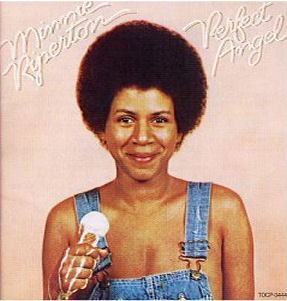

El 12 de julio de 1979, el cielo recuperó un angel capaz de cantar con unos registros vocales casi inimaginables para un ser humano. Se trataba de Minnie Riperton, que a sus 31 años vió truncado su futuro por culpa de un tumor cerebral.
Ella nació el 8 de noviembre de 1947 en Chicago, Illinois, siendo la menor de ocho hermanos. Sus padres, al percatarse del talento vocal y de las
habilidades musicales de su hija, decidieron apoyarla a emprender una carrera musical, especializándose en técnicas de respiración, fraseo y dicción.
Stevie Wonder al descubrirla, se enamoró de su voz poco común y única, capaz de controlar el registro de silbido y de pronunciar palabras.

Fueron colaboraciones formando parte de coros (el llamado "Wonderlove"
con Deniece Williams, Angela Winbush...) en giras de Stevie Wonder y el álbum Fulfillingness' First Finale, y sobre todo colaboraciones de Stevie
Wonder en lo que fue el segundo álbum de Minnie titulado Perfect Angel.
En este álbum de 1974 Minnie Riperton nos mostró todo su esplendor. Bellas y delicadas melodías interpretadas por una
dulzura exquisita, compuestas y producidas por Richard Rudolph (su marido) y Stevie Wonder. Canciones inolvidables como
"Lovin' you" o "Seeing You This Way" interpretadas por una de las más dulces voces del soul
comercial. Todo un referente para artistas actuales del soul/RnB.
Canciones inolvidables las de esta celestial figura presentes en los videos situados más abajo, y cómo no, Stevie Wonder cantando
una porción de su canción inspirada en esta mujer, "Perfect Angel" y "Lovin' You", en un póstumo homenaje a su espiritu libre y puro.
Otras colaboraciones de Stevie para este "ángel" fueron Stick Together en 1977 para el disco titulado "Stay In Love",
instrumentación y arreglos en la canción de 1979 titulada Lover And Friend, y la armónica de Stevie en la canción Give Me Time, año 1980.
Seeing You This Way
Minnie Riperton
Lovin' You
Minnie Riperton
Perfect Angel/Lovin'You
Stevie Wonder
Take A Little Trip
S. Wonder & Minnie Riperton (unrealesed version)